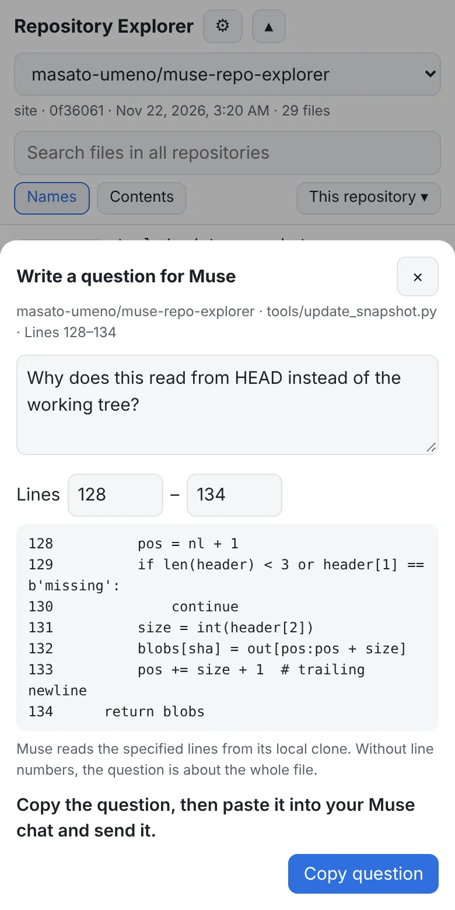

Read your repositories on your phone. Ask Muse about any line.
A private code browser that runs inside Muse, your personal AI agent.
To set it up, send this line to Muse:
Set up muse-repo-explorer for me by following https://github.com/masato-umeno/muse-repo-explorer/blob/main/MUSE_SETUP.md (keep replying in the language we normally use)
Send the same line later to update. Muse keeps replying in your language.
Open the live demoLive demo, showing this project's own repository.
Features

Made for reading on a phone
Line numbers and syntax colours, with long lines wrapped. No sideways scrolling.

Search file names and contents
Search one repository, several, or all of them. Tap a result to open that line.

Ask Muse about specific lines
Select lines, write a question, and paste it into your Muse chat. Muse reads the code itself.
Token efficiency
- Code is read from local files, not through a connector.
- Updates upload only the files that changed.
- Questions point to lines instead of pasting code.
Privacy
- The space is private. Do not create a public link.
- Only committed files are included, and you can exclude more.
- The page sends nothing to other sites.